THE CIRCULATORY SYSTEM
Table of
Contents
Types of Circulatory
Systems | Vertebrate
Cardiovascular System | Vertebrate
Vascular Systems
The Heart | The
Vascular System | Blood
| The Lymphatic
System | Learning
Objectives | Links
Types
of Circulatory Systems | Back
to Top
Living things must be capable of transporting
nutrients, wastes and gases to and from cells. Single-celled
organisms use their cell surface as a point of exchange with the
outside environment. Multicellular organisms have developed transport
and circulatory systems to deliver oxygen and food to cells and
remove carbon dioxide and metabolic wastes. Sponges are the simplest
animals, yet even they have a transport system. Seawater is the
medium of transport and is propelled in and out of the sponge by
ciliary action. Simple animals, such as the hydra and planaria (shown
in Figure 1), lack specialized organs such as hearts and blood
vessels, instead using their skin as an exchange point for materials.
This, however, limits the size an animal can attain. To become
larger, they need specialized organs and organ systems.
|
Figure 1. Structures that serve some of
the functions of the circulatory system in animals that lack
the system. Image from Purves et al.,
Life: The Science of Biology, 4th Edition, by Sinauer
Associates (www.sinauer.com)
and WH Freeman (www.whfreeman.com),
used with permission.
|
|
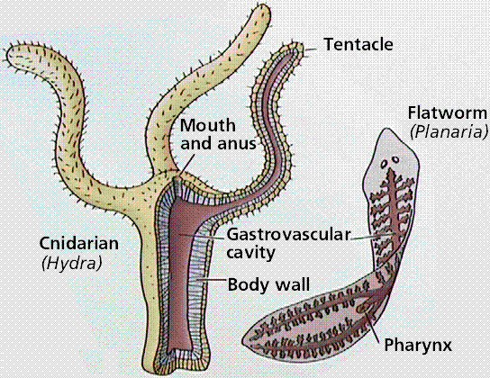
|
Multicellular animals do not have most of their
cells in contact with the external environment and so have developed
circulatory systems to transport nutrients, oxygen, carbon dioxide
and metabolic wastes. Components of the circulatory system include
- blood: a connective tissue of liquid plasma
and cells
- heart: a muscular pump to move the
blood
- blood vessels: arteries, capillaries and veins
that deliver blood to all tissues
There are several types of circulatory systems.
The open
circulatory system, examples of which are
diagrammed in Figure 2, is common to molluscs and arthropods. Open
circulatory systems (evolved in insects, mollusks and other
invertebrates) pump blood into a hemocoel with the blood diffusing
back to the circulatory system between cells. Blood is pumped by a
heart into the body cavities, where tissues are surrounded by the
blood. The resulting blood flow is sluggish.
|
Figure 2.
Circulatory systems of an insect (top) and
mollusc (middle). Images from Purves
et al., Life: The Science of Biology, 4th Edition, by
Sinauer Associates (www.sinauer.com)
and WH Freeman (www.whfreeman.com),
used with permission.
|
|
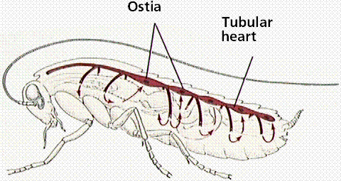
|
|
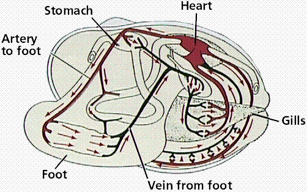
|
|
|
Vertebrates, and a few invertebrates, have a
closed
circulatory system, shown in Figure 2.
Closed circulatory systems (evolved in echinoderms and vertebrates)
have the blood closed at all times within vessels of different size
and wall thickness. In this type of system, blood is pumped by a
heart through vessels, and does not normally fill body cavities.
Blood flow is not sluggish. Hemoglobin
causes vertebrate blood to turn red in the presence of oxygen; but
more importantly hemoglobin molecules in blood cells transport
oxygen. The human closed circulatory system is sometimes called the
cardiovascular system. A secondary circulatory system, the
lymphatic
circulation, collects fluid and cells and
returns them to the cardiovascular system.
Vertebrate
Cardiovascular System | Back
to Top
The vertebrate cardiovascular system includes a
heart, which is a muscular pump that contracts to propel blood out to
the body through arteries, and a series of blood vessels. The upper
chamber of the heart, the atrium
(pl. atria), is where the blood enters the heart. Passing through a
valve, blood enters the lower chamber, the ventricle.
Contraction of the ventricle forces blood from the heart through an
artery.
The heart muscle is composed of cardiac muscle cells.
Arteries are blood vessels that carry blood away
from heart. Arterial walls are able to expand and contract. Arteries
have three layers of thick walls. Smooth muscle fibers contract,
another layer of connective tissue is quite elastic, allowing the
arteries to carry blood under high pressure. A diagram of arterial
structure is shown in Figure 3.
|
Figure 3.
Structure of an artery. Image from Purves et
al., Life: The Science of Biology, 4th Edition, by
Sinauer Associates (www.sinauer.com)
and WH Freeman (www.whfreeman.com),
used with permission.
|
|
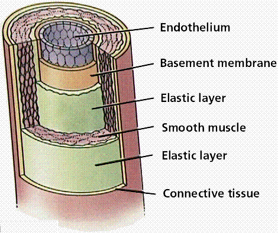
|
The aorta
is the main artery leaving the heart. The pulmonary
artery is the only artery that carries
oxygen-poor blood. The pulmonary artery carries deoxygenated blood to
the lungs. In the lungs, gas exchange occurs, carbon dioxide diffuses
out, oxygen diffuses in. Arterioles
are small arteries that connect larger arteries with capillaries.
Small arterioles branch into collections of capillaries known as
capillary beds, an exampe of one is shown in Figure 4.
|
Figure 5. Capillary with Red Blood Cell
(TEM x32,830). This image is
copyright Dennis Kunkel at www.DennisKunkel.com,
used with permission.
|
|
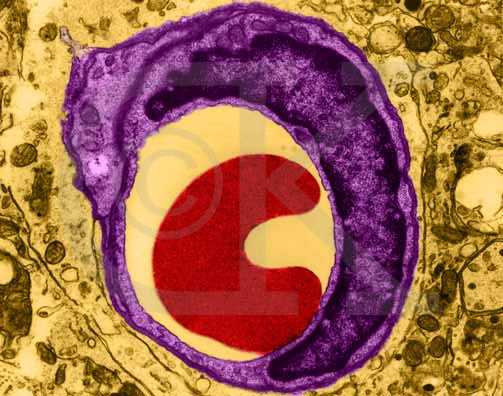
|
Capillaries, shown in Figures 4 and 5, are
thin-walled blood vessels in which gas exchange occurs. In the
capillary, the wall is only one cell layer thick. Capillaries are
concentrated into capillary
beds. Some capillaries have small pores
between the cells of the capillary wall, allowing materials to flow
in and out of capillaries as well as the passage of white blood
cells. Changes in blood pressure also occur in the various vessels of
the circulatory system, as shown in Figure 6. Nutrients, wastes, and
hormones are exchanged across the thin walls of capillaries.
Capillaries are microscopic in size, although blushing is one
manifestation of blood flow into capillaries. Control of blood flow
into capillary beds is done by nerve-controlled sphincters.
|
Figure 6. Changes
in blood pressure, velocity, and the area of the arteries,
capillaries, and veins of the circulatory system.
Image from Purves et al., Life: The
Science of Biology, 4th Edition, by Sinauer Associates
(www.sinauer.com)
and WH Freeman (www.whfreeman.com),
used with permission.
|
|
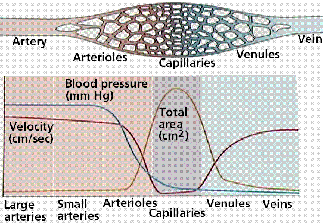
|
The circulatory system functions in the delivery
of oxygen, nutrient molecules, and hormones and the removal of carbon
dioxide, ammonia and other metabolic wastes. Capillaries are the
points of exchange between the blood and surrounding tissues.
Materials cross in and out of the capillaries by passing through or
between the cells that line the capillary, as shown in Figure
7.
|
Figure 7. Capillary structure, and
relationships of capillaries to arteries and veins.
Image from Purves et al., Life: The
Science of Biology, 4th Edition, by Sinauer Associates
(www.sinauer.com)
and WH Freeman (www.whfreeman.com),
used with permission.
|
|
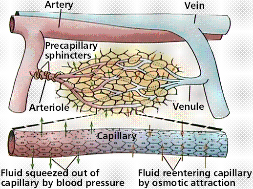
|
The extensive network of capillaries in the human
body is estimated at between 50,000 and 60,000 miles long.
Thoroughfare channels allow blood to bypass a capillary bed. These
channels can open and close by the action of muscles that control
blood flow through the channels, as shown in Figure 8.
|
Figure 8. Capillary beds and their feeder
vessels. Image from Purves et al.,
Life: The Science of Biology, 4th Edition, by Sinauer
Associates (www.sinauer.com)
and WH Freeman (www.whfreeman.com),
used with permission.
|
|
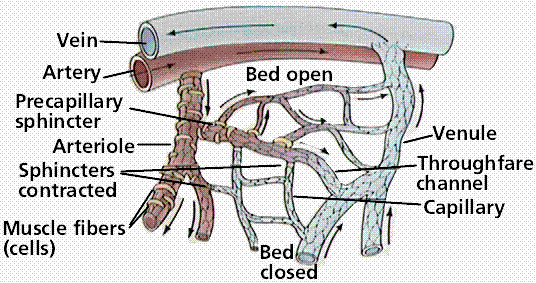
|
Blood leaving the capillary beds flows into a
progressively larger series of venules that in turn join to form
veins. Veins
carry blood from capillaries to the heart. With the exception of the
pulmonary
veins, blood in veins is oxygen-poor. The
pulmonary veins carry oxygenated blood from lungs back to the heart.
Venules
are smaller veins that gather blood from capillary beds into veins.
Pressure in veins is low, so veins depend on nearby muscular
contractions to move blood along. The veins have valves that prevent
back-flow of blood, as shown in Figure 9.
|
Figure 9.
Structure of a vein (top) and the actions of
muscles to propel blood through the veins.
Images from Purves et al., Life: The
Science of Biology, 4th Edition, by Sinauer Associates
(www.sinauer.com)
and WH Freeman (www.whfreeman.com),
used with permission.
|
|
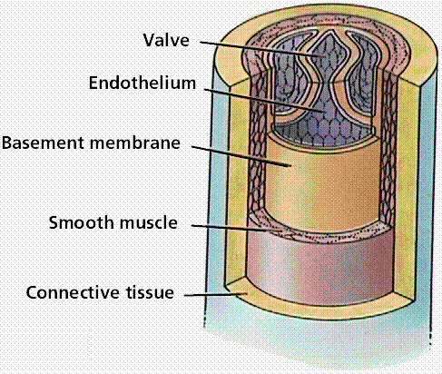
|
|
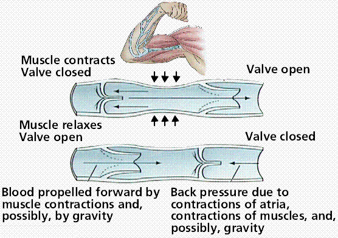
|
Ventricular contraction propels blood into
arteries under great pressure. Blood pressure is measured in mm of
mercury; healthy young adults should have pressure of ventricular
systole of 120mm, and 80 mm at ventricular diastole. Higher pressures
(human 120/80 as compared to a 12/1 in lobsters) mean the volume of
blood circulates faster (20 seconds in humans, 8 minutes in
lobsters).
As blood gets farther from the heart, the pressure
likewise decreases. Each contraction of the ventricles sends pressure
through the arteries. Elasticity of lungs helps keep pulmonary
pressures low.
Systemic pressure is sensed by receptors in the
arteries and atria. Nerve messages from these sensors communicate
conditions to the medulla
in the brain. Signals from the medulla regulate blood
pressure.
Vertebrate
Vascular Systems | Back
to Top
Humans, birds, and mammals have a four-chambered
heart that completely separates oxygen-rich and oxygen-depleted
blood, as is shown in Figure 10. Fish have a two-chambered heart in
which a single-loop circulatory pattern takes blood from the heart to
the gills and then to the body. Amphibians have a three-chambered
heart with two atria and one ventricle. A loop from the heart goes to
the pulmonary capillary beds, where gas exchange occurs. Blood then
is returned to the heart. Blood exiting the ventricle is diverted,
some to the pulmonary
circuit, some to systemic
circuit. The disadvantage of the
three-chambered heart is the mixing of oxygenated and deoxygenated
blood. Some reptiles have partial separation of the ventricle. Other
reptiles, plus, all birds and mammals, have a four-chambered heart,
with complete separation of both systemic and pulmonary
circuits.
|
Figure 10. Circulatory systems of several
vertebrates showing the progressive evolution of the
four-chambered heart and pulmonary and systemic circulatory
circuits. Images from Purves et al., Life: The Science of
Biology, 4th Edition, by Sinauer Associates
(www.sinauer.com)
and WH Freeman (www.whfreeman.com),
used with permission.
|
|
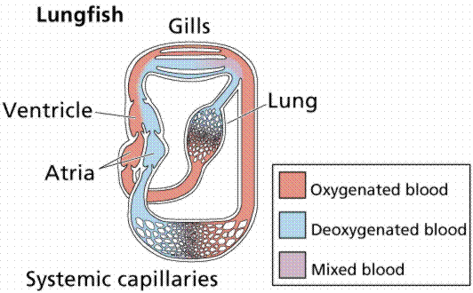
|
|
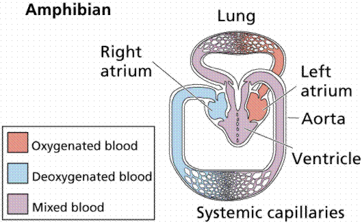
|
|
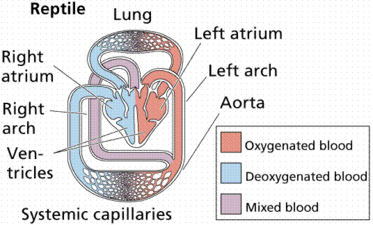
|
|
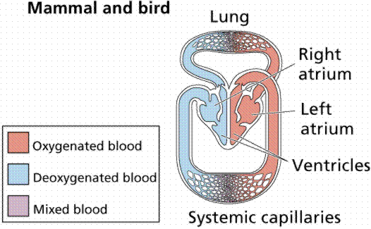
|
The heart, shown in Figure 11, is a muscular
structure that contracts in a rhythmic pattern to pump blood. Hearts
have a variety of forms: chambered hearts in mollusks and
vertebrates, tubular hearts of arthropods, and aortic arches of
annelids. Accessory hearts are used by insects to boost or supplement
the main heart's actions. Fish, reptiles, and amphibians have
lymph
hearts that help pump lymph
back into veins.
The basic vertebrate heart, such as occurs in
fish, has two chambers. An auricle
is the chamber of the heart where blood is received from the body. A
ventricle pumps the blood it gets through a valve from the auricle
out to the gills through an artery.
Amphibians have a three-chambered heart: two atria
emptying into a single common ventricle. Some species have a partial
separation of the ventricle to reduce the mixing of oxygenated
(coming back from the lungs) and deoxygenated blood (coming in from
the body). Two sided or two chambered hearts permit pumping at higher
pressures and the addition of the pulmonary loop permits blood to go
to the lungs at lower pressure yet still go to the systemic loop at
higher pressures.
|
Figure 11. The relationship of the heart
and circulatory system to major visceral organs. Below: the
structure of the heart. Images from
Purves et al., Life: The Science of Biology, 4th
Edition, by Sinauer Associates (www.sinauer.com)
and WH Freeman (www.whfreeman.com),
used with permission.
|
|
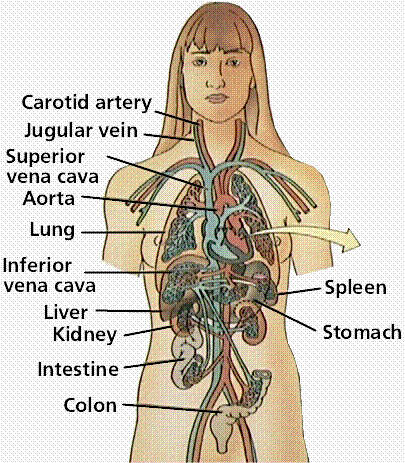
|
|
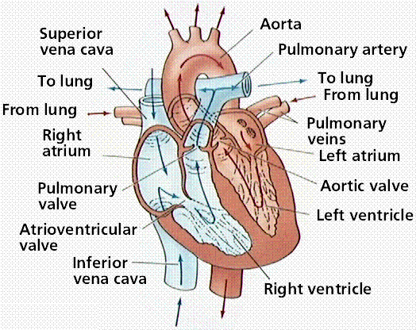
|
Establishment of the four-chambered heart, along
with the pulmonary and systemic circuits, completely separates
oxygenated from deoxygenated blood. This allows higher the metabolic
rates needed by warm-blooded birds and mammals.
The human heart, as seen in Figure 11, is a
two-sided, four-chambered structure with muscular walls. An
atrioventricular
(AV) valve separates each auricle from
ventricle. A semilunar
(also known as arterial) valve separates
each ventricle from its connecting artery.
The heart beats or contracts approximately 70
times per minute. The human heart will undergo over 3 billion
contraction cycles, as shown in Figure 12, during a normal lifetime.
The cardiac
cycle consists of two parts:
systole
(contraction of the heart muscle) and diastole
(relaxation of the heart muscle). Atria contract while ventricles
relax. The pulse is a wave of contraction transmitted along the
arteries. Valves in the heart open and close during the cardiac
cycle. Heart muscle contraction is due to the presence of nodal
tissue in two regions of the heart. The SA
node (sinoatrial node) initiates
heartbeat. The AV
node (atrioventricular node) causes
ventricles to contract. The AV node is sometimes called the pacemaker
since it keeps heartbeat regular. Heartbeat is also controlled by
nerve messages originating from the autonomic nervous
system.
|
Figure 12. The
cardiac cycle. Image from Purves et al., Life: The
Science of Biology, 4th Edition, by Sinauer Associates
(www.sinauer.com)
and WH Freeman (www.whfreeman.com),
used with permission.
|
|
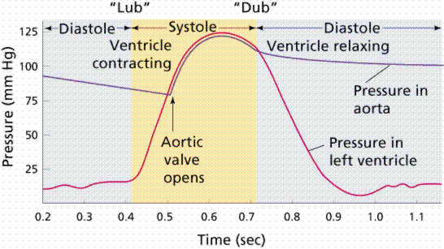
|
Blood flows through the heart from veins to atria
to ventricles out by arteries. Heart valves limit flow to a single
direction. One heartbeat, or cardiac cycle, includes atrial
contraction and relaxation, ventricular contraction and relaxation,
and a short pause. Normal cardiac cycles (at rest) take 0.8 seconds.
Blood from the body flows into the vena cava, which empties into the
right atrium. At the same time, oxygenated blood from the lungs flows
from the pulmonary vein into the left atrium. The muscles of both
atria contract, forcing blood downward through each AV valve into
each ventricle.
Diastole is the filling of the ventricles with
blood. Ventricular systole opens the SL valves, forcing blood out of
the ventricles through the pulmonary artery or aorta. The sound of
the heart contracting and the valves opening and closing produces a
characteristic "lub-dub" sound. Lub is associated with closure of the
AV valves, dub is the closing of the SL valves.
Human heartbeats originate from the sinoatrial
node (SA node) near the right atrium. Modified muscle cells contract,
sending a signal to other muscle cells in the heart to contract. The
signal spreads to the atrioventricular node (AV node). Signals
carried from the AV node, slightly delayed, through bundle of His
fibers and Purkinjie fibers cause the ventricles to contract
simultaneously. Figure 13 illustrates several aspects of this.
|
Figure 13. The contraction of the heart
and the action of the nerve nodes located on the
heart. Images from Purves et al.,
Life: The Science of Biology, 4th Edition, by Sinauer
Associates (www.sinauer.com)
and WH Freeman (www.whfreeman.com),
used with permission.
|
|
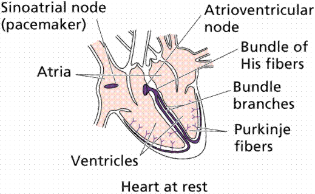
|
|
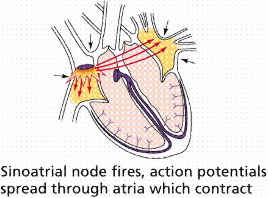
|
|
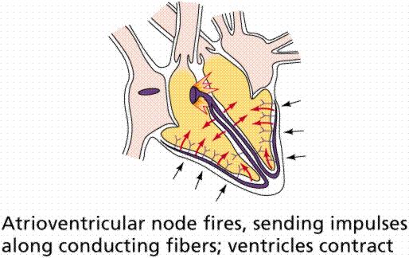
|
Heartbeats are coordinated contractions of heart
cardiac cells, shown in an animate GIF image in Figure 14. When two
or more of such cells are in proximity to each other their
contractions synch up and they beat as one.
An electrocardiogram (ECG) measures changes in
electrical potential across the heart, and can detect the contraction
pulses that pass over the surface of the heart. There are three slow,
negative changes, known as P, R, and T as shown in Figure 15 .
Positive deflections are the Q and S waves. The P wave represents the
contraction impulse of the atria, the T wave the ventricular
contraction. ECGs are useful in diagnosing heart abnormalities.
|
Figure 15. Normal cardiac pattern (top)
and some abnormal patterns (bottom).
Images from Purves et al., Life: The
Science of Biology, 4th Edition, by Sinauer Associates
(www.sinauer.com)
and WH Freeman (www.whfreeman.com),
used with permission.
|
|
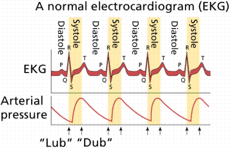
|
|
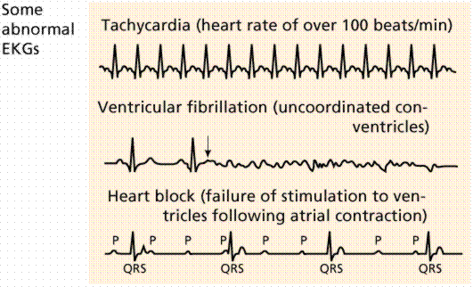
|
Diseases of the Heart and
Cardiovascular System
Cardiac muscle cells are serviced by a system of
coronary
arteries. During exercise the flow through
these arteries is up to five times normal flow. Blocked flow in
coronary arteries can result in death of heart muscle, leading to a
heart attack.
Blockage of coronary arteries, shown in Figure 16,
is usually the result of gradual buildup of lipids and cholesterol in
the inner wall of the coronary artery. Occasional chest pain, angina
pectoralis, can result during periods of stress or physical exertion.
Angina
indicates oxygen demands are greater than capacity to deliver it and
that a heart attack may occur in the future. Heart muscle cells that
die are not replaced since heart muscle cells do not divide. Heart
disease and coronary artery disease are the leading causes of death
in the United States.
|
Figure 16. Development of arterial
plaque. Images from Purves et al.,
Life: The Science of Biology, 4th Edition, by Sinauer
Associates (www.sinauer.com)
and WH Freeman (www.whfreeman.com),
used with permission.
|
|
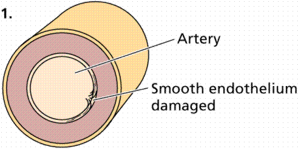
|
|
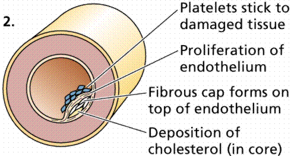
|
|
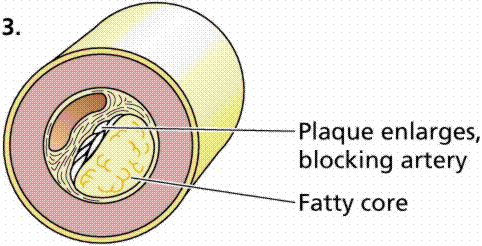
|
Hypertension,
high blood pressure (the silent killer), occurs when blood pressure
is consistently above 140/90. Causes in most cases are unknown,
although stress, obesity, high salt intake, and smoking can add to a
genetic predisposition. Luckily, when diagnosed, the condition is
usually treatable with medicines and diet/exercise.
Two main routes for circulation are the pulmonary
(to and from the lungs) and the systemic (to and from the body).
Pulmonary arteries carry blood from the heart to the lungs. In the
lungs gas exchange occurs. Pulmonary veins carry blood from lungs to
heart. The aorta is the main artery of systemic circuit. The vena
cavae are the main veins of the systemic circuit. Coronary
arteries deliver oxygenated blood, food,
etc. to the heart. Animals often have a portal
system, which begins and ends in
capillaries, such as between the digestive tract and the
liver.
Fish pump blood from the heart to their gills,
where gas exchange occurs, and then on to the rest of the body.
Mammals pump blood to the lungs for gas exchange, then back to the
heart for pumping out to the systemic circulation. Blood flows in
only one direction.
Plasma
is the liquid component of the blood. Mammalian blood consists of a
liquid (plasma) and a number of cellular and cell fragment components
as shown in Figure 21. Plasma is about 60 % of a volume of blood;
cells and fragments are 40%. Plasma has 90% water and 10% dissolved
materials including proteins, glucose, ions, hormones, and gases. It
acts as a buffer, maintaining pH near 7.4. Plasma contains nutrients,
wastes, salts, proteins, etc. Proteins in the blood aid in transport
of large molecules such as cholesterol.
Red
blood cells, also known as
erythrocytes,
are flattened, doubly concave cells about 7 µm in diameter that
carry oxygen associated in the cell's hemoglobin. Mature erythrocytes
lack a nucleus. They are small, 4 to 6 million cells per cubic
millimeter of blood, and have 200 million hemoglobin molecules per
cell. Humans have a total of 25 trillion red blood cells (about 1/3
of all the cells in the body). Red blood cells are continuously
manufactured in red marrow of long bones, ribs, skull, and vertebrae.
Life-span of an erythrocyte is only 120 days, after which they are
destroyed in liver and spleen. Iron from hemoglobin is recovered and
reused by red marrow. The liver degrades the heme units and secretes
them as pigment in the bile, responsible for the color of feces. Each
second two million red blood cells are produced to replace those thus
taken out of circulation.
White
blood cells, also known as
leukocytes,
are larger than erythrocytes, have a nucleus, and lack hemoglobin.
They function in the cellular immune response. White blood cells
(leukocytes) are less than 1% of the blood's volume. They are made
from stem cells in bone marrow. There are five types of leukocytes,
important components of the immune system. Neutrophils enter the
tissue fluid by squeezing through capillary walls and phagocytozing
foreign substances. Macrophages
release white blood cell growth factors, causing a population
increase for white blood cells. Lymphocytes
fight infection. T-cells
attack cells containing viruses. B-cells
produce antibodies.
Antigen-antibody complexes are phagocytized by a macrophage. White
blood cells can squeeze through pores in the capillaries and fight
infectious diseases in interstitial areas
Platelets
result from cell fragmentation and are involved with clotting, as is
shown by Figures 17 and 18. Platelets are cell fragments that bud off
megakaryocytes in bone marrow. They carry chemicals essential to
blood clotting. Platelets survive for 10 days before being removed by
the liver and spleen. There are 150,000 to 300,000 platelets in each
milliliter of blood. Platelets stick and adhere to tears in blood
vessels; they also release clotting factors. A hemophiliac's blood
cannot clot. Providing correct proteins (clotting factors) has been a
common method of treating hemophiliacs. It has also led to HIV
transmission due to the use of transfusions and use of contaminated
blood products.
|
Figure 17. Human Red Blood Cells,
Platelets and T-lymphocyte
(erythocytes
= red;
platelets
= yellow;
T-lymphocyte
= light green) (SEM x 9,900). This
image is copyright Dennis Kunkel at www.DennisKunkel.com,
used with permission.
|

|
|
Figure 18. The
formation and actions of blood clots.
Images from Purves et al., Life: The
Science of Biology, 4th Edition, by Sinauer Associates
(www.sinauer.com)
and WH Freeman (www.whfreeman.com),
used with permission.
|
|
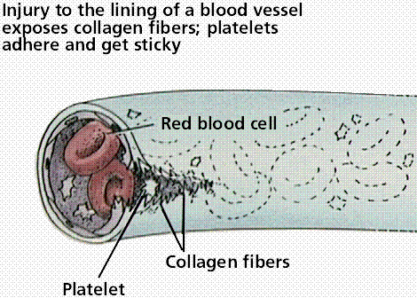
|
|
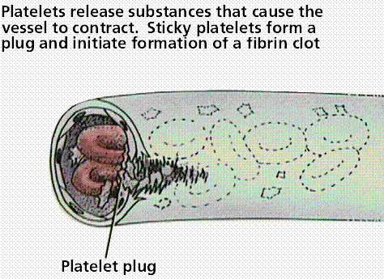
|
|
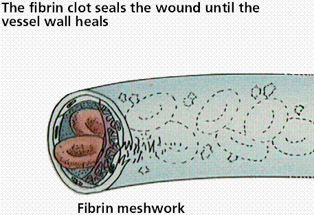
|
|
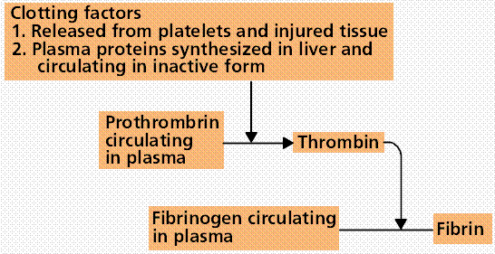
|
|
Figure 19. Blood Clot Formation
(blood
cells,
platelets,
fibrin
clot) (SEM x10,980).
This image is copyright Dennis Kunkel at
www.DennisKunkel.com,
used with permission.
|
|
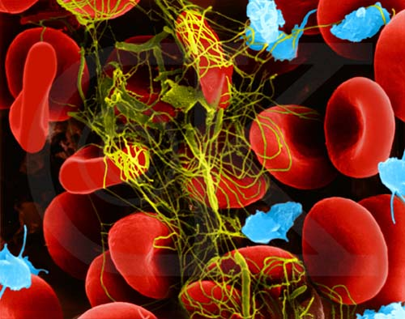
|
The Lymphatic
System | Back
to Top
Water and plasma are forced from the capillaries
into intracellular spaces. This interstitial fluid transports
materials between cells. Most of this fluid is collected in the
capillaries of a secondary circulatory system, the lymphatic system.
Fluid in this system is known as lymph.
Lymph flows from small lymph capillaries into
lymph vessels that are similar to veins in having valves that prevent
backflow. Lymph vessels connect to lymph nodes, lymph organs, or to
the cardiovascular system at the thoracic duct and right lymphatic
duct.
Lymph nodes are small irregularly shaped masses
through which lymph vessels flow. Clusters of nodes occur in the
armpits, groin, and neck. Cells of the immune
system line channels through the nodes and
attack bacteria and viruses traveling in the lymph.
- List three functions of blood.
- Distinguish between open and closed circulatory systems.
- Describe the composition and functions of blood.
- Trace the path of blood in the human body. Begin with the
aorta and name all major components of the circulatory system
through which the blood passes before it returns to the
aorta.
Text ©1992, 1994, 1997, 1998, 2000, 2001, 2002, 2007, by M.J.
Farabee, all rights reserved. Use of the text for educational
purposes is encouraged.
Back to Table of Contents
| LYMPHATIC SYSTEM AND
IMMUNITY
Email: mj.farabee@emcmail.maricopa.edu
Last modified:
The URL of this page is:
{kind=link}
{kind=link}